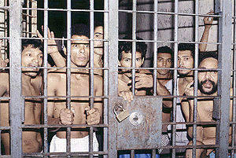

Ciudad
 De: La Frikipedia, la enciclopedia extremadamente seria.
De: La Frikipedia, la enciclopedia extremadamente seria.
Las ciudades son agrupaciones de seres humanos,canis, políticos, emos, edificios, edificios, edificios, edificios, edificios (valga la redundancia, aunque no se lo que signifique) calles, atascos, estadios de furbo, iglesias, delincuencia, más calles, ruido, túneles, olores feos, cables eléctricos, fábricas, negocios, basureros, vishas, parques y alguna que otra cosa que constituyen un todo, comprimidos hasta alcanzar una densidad extrema, de masa elevadisima donde puedes encontrar todo tipo de cosas, y donde no puedes caminar 1 micrómetro sin estrellarte contra una pared, señal de tránsito o terminar atropellado por el tren bala.
Su masa suele ser esta, pero varía de acuerdo a la ciudad:
Cabe destacar que nuestros cientificos frikipédicos no estaban de buen humor el día que hicieron el cálculo, pero esto no influye en lo más mínimo al resultado.
Origen de las ciudades
Las ciudades se crearon porque la gente en la antigüedad tenía que ir a la caverna de la otra persona para ir a tener sexo, la cual quedaba a cientos de kilómetros a la redonda, demasiado lejos para volver sin que se note y usar siempre la misma excusa de que fueron a cazar y les fue mal. Entonces los jefes de la Comunidad Humana de las Cavernas Asociadas (fundada algo antes) estuvieron de acuerdo en vivir más cerca y agrupar a las personas en lo que más tarde fue la primera ciudad. Por otro lado las mujeres habían hecho sus propios acuerdos, pero los hombres fueron quieres partieron con todo.
Planificación de la primera ciudad
Tras un acuerdo entre los indios que habitaban la masapotamia hace tropocientosmillones de años, estos se agruparon en lo que más tarde sería la ciudad de Mandril.
- En el momento inmediatamente despues de la creación de Mandril estaban todas las personas y tipos de gente literalmente mezclados en una masa inconsistente con sabor a
vómito nada, por lo que se tuvo que separar un grupo de gente para que ponga orden y maneje los hilos, surgiendo la primera división conocida, los políticos.
- El siguiente grupo que se formó, fue un grupo que se dedicaría a contruir cosas para reemplazar las ya obsoletas cavernas (eran muy incómodas para vivir
y tener sexo) y tuvieron que buscar la solución hasta que por fin la encontraron: llegaron así a construir las casas y los edificios, luego se entusiasmaron y contruyeron todo lo que conoces de una ciudad, desde calles sin pavimento hasta hoteles de 5 estrellas, pasando por las escuelas sin gas.
- Cuando la gente comenzaba a enfermarse de diferentes maneras (véase alimentos intoxicados, resfríos, picaduras de mosquitos,
gonorrea, etc.) un grupo especial de gente (sana por supuesto), estaba encargada de acabar con el dolor y el sufrimiento y ayudar a curar a la gente e inyectar drogas legalmente, más tarde serían conocidos como los verdugos médicos, los cuales contruyeron sus propios edificios, llamados hospitales, sanatorios, consultorios, centros médicos, o como se les de la gana
- Luego con el tiempo apareció un grupo cuyo origen se desconoce, aunque sólo se sabe que adoran arrojarse desde lo alto de rascacielos, o cortarse las venas, grupo autollamado Emos. Se cree que simplemente aparecen de la nada, o que fueron un intento fallido de McDonald por crear las papas fritas rellenas de brócoli.
- Otro grupo de personas se dedicó a interceder con Dios y ayudar a que la gente practique el mensaje de Dios y entregue las ofrendas para ayudar a la gente pobre, reparar las goteras, traer alguna que otra cosita nueva (barata, eso sí) y dejar lo demás ahorrado para
ellos mismos más mantenimiento, y repartir hostias y que guarde las Sagradas Confesiones sin decir nada (nada de nada), y lanzarte sermones de tarde completa si te portas mal, de aqui salieron los curas y se distinguen por usar hábitos y leer mucho la Biblia.
El banco principal de la ciudad de Mandril
- También otro grupo de personas se encargó de cuidar el dinero de otras personas para
quedarselo ellos ayudarte a quedar en la quiebra a solucionar tus problemas con el dinero y trabajan en un edificio en el que lo guardan y atienden a la gente, estos personajes son la gente del banco.
- Ante la necesidad de estar informado de lo que pasa en todos lados
y en el dormitorio de los vecinos surgió otro grupo de personas que informaban de todo, desde rumores sobre un tal país Vasco pasando por el partido mas importante del fin de semana, accidentes de grandes y pequeñas magnitudes, las "aventuras" de tu novia hasta cosas que todavía están por pasar, al principio no hubo ningún problema, pero no mucho más tarde ya eran cientos y se volvieron molestos y muy insistentes, ahora casi nadie los quiere, estas personas son los periodistas (aunque se considera incluir a los profetas dentro de este grupo).
- También surgió la necesidad de seguridad en las ciudades, entonces un grupo de
ranas personas decidieron agruparse, armarse, y agruparse para formar la poli-policía, la cual se divide en policías buenos, policías malos, policías corruptos, y otros policías.
- Por último, quedó un grupo de personas (el 99.999999%) que no tenían qué hacer, entonces se decidieron a ponerse a vivir en los edificios y casas que los otros grupos y el Equipo A decidieron hacer. Algunos, ponían plata para
usurpar comprar las casas y edificios "legalmente", y otros, hacían lo que está tachado arriba, y usurpaban, robaban, y robaban, los terrenos y casas. Este grupo completo se llamo esclavos habitantes. Entre los habitantes están los habitantes comunes (1% del grupo) y los villeros (%110 del grupo).
- Además surgió en la modernidad, un grupo de personas, que querían quedarse a vivir a toda costa en las mejores ciudades, sin pagar peaje, ni mostrar sus pasaporte, (porque no tienen). A este grupo se le llama los inmigrantes ilegales. Conforman el 120% de la población.
Lo que puedes encontrar en una ciudad
 En la imagen se ve lo que se puede encontrar en una ciudad de tamaño grande. Hay otras cosas que se pueden encontrar pero no aparecen
En la imagen se ve lo que se puede encontrar en una ciudad de tamaño grande. Hay otras cosas que se pueden encontrar pero no aparecen porque no tuve ganas de buscarlas porque no se alcanzan a ver en la imagen.
Aquí daremos una descripción:
Transporte
Avenida pricipal

Las autopistas y el excelente servicio que nos brindan
inmigrantes ilegales turistas y viajeros que vienen a quedarse a vivir ilegalmente en la ciudad, sin los cuales, la vida comercial de las ciudades colapsaría. Poseen tropocientos millones de carriles, para que pasen todos los coches de la ciudad. Están hechas con excremento pavimento.
Autopista

Ejemplo de una autopista... Recordemos que en ciudades como Londres, los coches van en dirección contraria, porque como todos saben, en Reino Hundido, la Tierra gira al revés
que ingresaran más inmigrantes ilegales que más gente fuera al trabajo, entonces decidieron hacer las super-requete-enormes-calles-por-la-que-pasan-mil-coches-a-la-vez, y fue todo un éxito, tal como el nombre lo decía ingresaban más 1000 inmigrantes ilegales a la vez pasaban más de 1000 coches a la vez, permitiendo que más gente fuera al trabajo. Pero luego de un tiempo surgió un problema: el nombre (super-requete-enormes-calles-por-la-que-pasan-mil-coches-a-la-vez)... Estonces le pusieron el nombre de autopista, y todos felices (hasta que los coches empezaron a chocarse, pero esa es otra hstoria)
Aeropuerto
¿Te animarías a volar en uno de estos?
demandas de inmigrantes ilegales retrasos en sus autopistas, carreteras, trenes, y qué se yo qué más, se recurre al aeropuerto. Si necesitas escapar de la mafia rápido salir de la ciudad para hacer negocios, ve al aeropuerto, ya que te esperan BARATÍSIMOS vuelos en esos vehículos tan bonitos que todos conocemos... Los A.V.I.O.N.es (Antes de Volar, Irías a Oler Nada), bonitos tubos, con pedazos de metal a los lados, que tienen cilindros que hacen que el A.V.I.O.N. vuele, y hacen "pfffffffffffffffffffffffffffffffffffffffffffffffffffffffffffffffffffffffffffffffffffffffffffffffff". Son muy cómodos, y vuelan muy rapido, y se está volviendo toda una moda entre los EMOs, que adoran tirarse (sin paracaidas) desde las alturas, reemplazando a los ya pasados de moda rascacielos.
Servicio ferroviario
Tren repleto de
inmigrantes ilegales turistas inocentes que llegan a la ciudad
excelente servicio ferroviario, lo que permite que los inmigrantes ilegales turistas tengan más opciones para ingresar a la ciudad, esquivando los controles de migracion. De esta forma tendremos muchas formas de ingresar ilegalmente a una ciudad. Para los que son tan idiotas que no lo recuerdan, los trenes son vehículos, que tienen un auto, que tira de otro que tira de otro que tira de otro y así sustantivamente. Los trenes andan sobre dos escarvadientes gigantes plateados paralelos. Si quieres ingresar ilegalmente a una ciudad de forma más rápida para que no te vean los de control de migración, usa el A.V.E. (Asta Vuestra Estación).
Metro
Dar Verde yendo al trabajo un lunes por la mañana
inmigrantes ilegales turistas les conviene mucho porque los de control de migración no los ven es una forma rápida de desplazarse en una ciudad. Son un fáciles de construir, porque sólo consiste en meter las vías del tren de 2 metros de ancho en unos tuneles gigantes de 10 metros de diametro bajo el mamotreto de edificios que hay encima, esquivando cañerías, tubos de gas, oleoductos, tumbas, y restos de dinosaurios extintos, mientras te aseguras de que el túnel tenga la forma correcta, los rieles estén paralelos, y te debes asegurar de que los inmigrantes ilegales no se roben los durmientes. Más te vale no ser claustrofobico.
Zonas de Ocio
Estadio de Furbo
Estadio de furbo con resortes en lugar de columnas, para evitar los terremotos causados por los hinchas durante un partido
Parque de Diversiones, Centro de Atraciones, Feria, o como se te de la gana llamarle
Aquí es adonde va la gente a perder el tiempo, como lo estoy haciendo yo escribiendo esto divertirse. Podemos encontrar en estos sitios cosas como la montaña trucha, la calesita, el martillo, el destornillador, los coches chocadores, la vuelta al mundo, y otros más.
Para ingresar primero deberás pagar lo que equivaldría a 6 ojos de tu cara, o más bien $0.50. Luego, si te quieres subir a la montaña trucha, deberás hacer 7 años de fila2 para tener 6 segundos de diversion, etc.
Sin embargo, este es un plan malvado del Dr. Que-e-eso que consiste en hacer que la gente se divierta tanto, que no quieran trabajar y así lograr que la población se vuelva peresoza, para lograr conquistar el planeta Piedra.
Emergencias
Hospital
Toda ciudad de más de 2 habitantes posee un hospital. Son edificios blancos que dicen "HOSPITAL" y tienen una crucecita roja. Ahí van todos lo que le pasa algo, desde los que se rompen la uña, hasta los que les da una cardiopatía aguda, pasando por la gastroenteritis. Aquí trabajan los verdugos médicos, y atienden a sus víctimas pacientes. Los que se mueren en el hospital son tirados al río llevados a su entierro en el cementario.
Estación de bomberos
Es la cede de los B.O.M.B.E.R.O.S. (Bobos Osados a Matar Bebes En el Río Orando para que sea Sábado). Estos personajes se dedican a vagar la ciudad en vehículos rojos, con lucecitas y sonidos. Se creen cualquier broma telefónica, por eso viven saliendo de sus estaciones para decubrir que el banco municipal no estaba en llamas. Ellos dicen que no quieren que les pase lo que le paso a la pastorcita del cuento del lobo que se rovaba las ovejas. Se dedican principalmente a apagar incendios, rescatar heridos de derrumbes, y bajar gatitos de los árboles.
Policía
La policía es un servicio de emergencias muy especial. Son quienes se encargan de cobrar sobornos defender la justicia, usando la fuerza VRUTA. Cuande te estén robando el auto, llama al 911, responde las 2500 preguntas que te dicen que respondas, y en 3 o 4 horas aparecerá un tipo vestido de azul diciendo que lo lamentan, y que no pudieron atrapar al que te robo tu auto que te costo tres ojos de la cara. En fin, se encargar de cobrar sobornos detener a las fuerzas del mal, usando las del "bien" .Primero educadamente y luego a la VRUTEDAD, sacando sus AK-48, sus M5, y sus 11mm. Espezarán a disparar a diestra y siniestra contra lo que se venga, y como tienen mucha suerte, siempre (o casi siempere) le pegan al malo un tiro en la cabeza, destripándolo por completo. También se encargan de detener a los inmigrantes ilegales, pero en esta zona no son muy buenos.
Servicios
Colegio
 Alumnos felices en un colegio, durante una clase de matemáticas
van a ser torturados con máquinas medievales, van a aprender y a estudiar mucho. Son lugares clave para la sociedad moderna, porque como todos saben, los niños son torturados con brutalidad van a aprender, ya que ellos son el futuro. Aquí aprenderán a torturar matemáticas, ciencias, geografía, etc. Así, en el futuro próximo, serán torturadores buenas personas, que sabrán ¡¡¡matar y asesinar!!! valerse por sí solos. En general, los colegios son edificios ¡¡¡HORRIBLES!!! blancos y muy bonitos. Poseen bonitos barrotes en las puertas y ventanas ventanales y puertas de cristal, que permiten el ingreso de luz natural. Los chicos son secuestrados retirados de sus hogares en autobuses amarillos. Por lo general los chicos lloran, gritan y piden a gritos que dejen de ser torturados se divierten mucho en los colegios. Al finalizar el colegio, con un neurotransimsor se elimina los malos recuerdos de los alumnos, así en el futuro harán creer a sus hijos que la escuela es buena.
Colegio Secundario
Tras haber sido brutalmente torturados por 6 años recibido los conocimientos adecuados, los chicos, pasan a la Escuela Secundaria. Aquí, seguirán siendo brutalmente torturados elevado a la enésima potencia recibirán nuevos lecciones de tortura conocimientos para hacer del mundo un lugar peor mejor.
Los chicos tendrán clase de tortura, control mental, fabricación de máquinas torturadoras, literatura mierdamática matemática, química lanzando productos corrosivos sobre los niños, y aprendiendo como reaccionan los quimicos sobre éstos, física, entre 70.000.000.000.000 de materias más otros.
Universidad
Son una versión avanzada del colegio, a la cual asisten sólo mayores de 18 años. A diferencia de las escuelas, las universidades son privadas, aunque nadie lo sabe. Son propiedad de nuestro amigo, Billy Puertas, Golden Gates, o como quieras llamarle la nación, por lo tanto son públicas. Los jovenes van a la universidad para aprender y tener un futuro mejor sin saber que con unos parlantes especiales emiten en altas frecuencias mensajes subliminales haciendoles gastar miles de $$$ para comprar cosas de Mocosoft, como Window Ciego, o la más popular freidora profesional, la Xbox 360 . Los estudiantes tendrán una excelente estadía aquí con servicios muy buenos, como un comedor, aulas amplias, y mesas torturadoras medievales con almohadas rellenas de clavos.
Cementerio
Es el lugar donde todos los cuerpos muertos de la ciudad van a parar cuando se van del hospital. Son encerrados en cajas de madera, metal, o papel. Luego son enterrados a suficiente profundidad como para que lleguen hasta el centro de la tierra y desaparezan el el agujero negro que hay allí.
Basurero
El basurero, es el lugar al que van todos los desperdicios de la ciudad y donde la mafia le gusta tirar sus bolsas negras de plástico (nada sopechosas). Aunque no lo creas, en todas las ciudades, tiras algo a un basurero de la calle, y al día siguiente ¡a desaparecido! OHHHHHHHHHH. Muchos se preguntaban como ocurría, hasta que el 36 de Octiembre del 2015 se levanto el toque de queda nocturno y todos descubrimos que la basura desparecía porque unos camiones la llevaban al basurero, y ahí va todo, y aunque no tenga gracia es la realidad, pero en realidad, el 158,15% de la basura se la llevan los visheros, y -58,15% restante va Mc Donald, para hacer esas hamburgesas TAN ricas al basurero municipal.
Parque
Son los únicos sitios sobrevivientes de la naturaleza, que no han sido invadidos por la masa creciente de edificios. Segun Enstien debajo de los parques hay agujeros grises de antimateria cuya masa es 0.23, densidad de 0.1251 por kg y electronegatividad de 11.56. Por este motivo los parques repelen el crecimiento de los edificios.
Pero, en realidad no son más que pedazos de agujeros en las ciudades provocados por los florecimientos masivos de brócoli y los ataques de las Ardillas Huevonas Intergalácticas
Zona Industrial
Las áreas industriales son zonas que han sido invadidas por un tipo especial de edificios: las fábricas. Aquí las personas van a trabajar por $0.0001 centimos por año. Estas areas tienden a ser altamente contaminantes, porque hay unos extraños y bonitos tubos que apuntan hacia el cielo, y tiran unas bonitas nubes marrones. Se cree que estas nubes marrones están hechas de excremento humano vaporizado. Esto significaría que las personas que aquí "trabajan" sólo se dedican a encerrarse en el baño y hacer lo suyo.
Tras haber escapado de los tubos, las nubes marrones vuelan por el cielo, y se chocan con las nubes comunes. Al encontrarse, las nubes comienzan a calentarse porque comienzan a hacer ciertas cosas. Comienzan a tener tanto calor que comienzan a sudar, y luego, este sudos tóxico derrite todo lo que toca, conocido como la lluvia ácida.
Pues hace poco se descubrió que todo esto otro plan del malvado Dr. Vu, que consiste en que la lluvia ácida logre derretir todos los letreros de "ir despacio, chicos corriendo". Al ocurrir esto, todos los autos pasarán mucho muy rápido por donde hay niños, y los atropellarán y matarán a todos. Tras varios años, no quedarán más niños, sólo habra personas grandes que irán envejeciendo cada vez más, y al final sólo habrá ancianos, no más adultos. Esto le dara la oportunidad al Dr. Vu de conquistar el planeta Disney Word, y darle una patada en los cojones a Mickey.
Tipos de ciudades
Hace poco (más precisamente mañana) un grupo de tipos que no tenían otra estupidez que hacer, se pusieron a hacer la calsificacíon por numero de habitantes de las ciudades. Y yo como me veo obligado a escribir esto porque me amenazan de muerte, aquí se los muestro.
Por habitantes
- De -1.000 a -100: Ciudad pequeña, con un número reducido de habitantes, y probablemente sin cayes pavimentadas. -10km2
- De -100 a -10 habitantes: Ciudad pequeña-mediana, con las primeras calles pavimentadas, y
centro de tortura escuela, y un pequeño hospital.-0.5km2
- De -10 a 0 habitantes: Ciudad pequeña-grande, todas las calles pavimentadas, dos o más
centros de tortura escuelas , hospitales, alguna plaza, y el primer asentamiento vishero.0km2
- De 0 a 10 habitantes: Ciudad mediana-pequeña, con varios asentamientos visheros, una iglesia, y hotel, y una avenida. 2km2

Ejemplo clásico de una ciudad pequeña
- De 10 a 100 habitantes: Ciudad mediana-mediana con muchos asentamientos visheros, primeras vías férreas, algun político corrupto, y no más de dos autopistas.6km2
- De 100 a 1.000 habitantes: Ciudad mediana-grande, con muchas vías férreas, numerosas vishas, alta tasa de ingreso de inmigrantes ilegales, varias vías de metro, muchos políticos corruptos, y con altas tasas de contaminacion.10km2
- De 1.000 a 10.000 habitantes: Ciudad grande-pequeña, con infinidad de vías férreas, muchísimas vías de metro, tropecientros millones de visheros y políticos corruptos hasta decir basta. 20km2
- De 10.000 a 100.000 habitantes: Ciudad grande-mediana con autopistas de a montones, metro y vías férreas hasta donde alcanza la vista, vishas por doquier, y de políticos corruptos ni hablar. Comienzan a aparecer los edificios de mucha muy gran altura.
- De 100.000 a 1.000.000 habitantes: Ciudad Grande-grande con autopistas hasta donde alcanza la vista, imposible caminar sin toparte con un político corrupto, tren o cualquier cosa que te pueda matar. Las vishas ocupan el 99.9% del territorio. 40km2
- De 1.000.000 a 10.000.000 habitantes: Ciudad Gigante-pequeña. La densidad de la materia es tan elevada que comienza a ocurrir una doblegación del espacio-tiempo de forma que como dice la ley de la relatividad general, el tiempo se vuelve algo irracional e inequívoco según el famoso cálculo 2+2=5. 100km2
- De 10.000.000 a 100.000.000 habitantes: Ciudad Gigante-mediana. La densidad llega a valores críticos porvocando una deformacion de las tres dimensiones, generando la aparicion espontanea de agujeros negros, y agujeros de gusano en el centro de dichas ciudades. 200km2
- De 100.000.000 a 1.000.000.000 habitantes: Ciudad Gigante-grande. La deformacion del espacio-tiempo provoca una curvatura helicoidal en diferentes puntos adyacentes al centro. Esto provoca la desaparición de diferentes barrios en momentos inesperados. Se cree que la ciudad más grande de la historia, llego a tener este tamaño, y fue absorvida por su propia masa, provocando su desaparición. 400km2
- Más de 1.000.000.000 habitantes: si la ciudad no ha sido engullida por su propio volumen, es provable que la densidad y la presión generen zonas donde se inicien espontáneamente reacciones de fusión nuclear, que terminen provocando la autodestrucción de la ciudad en cuestión.
Autor(es):
- Krusher
- Hari Seldon
- Doctor grijander
- Perdedor458
- Roms
- Azulejos
- El Sevillano
- LucX
- Juancarlos
- Cibercrank
Frikipedia 2005-2016, Licencia
GFDL 1.2 - Extraído por FrikiLeaks